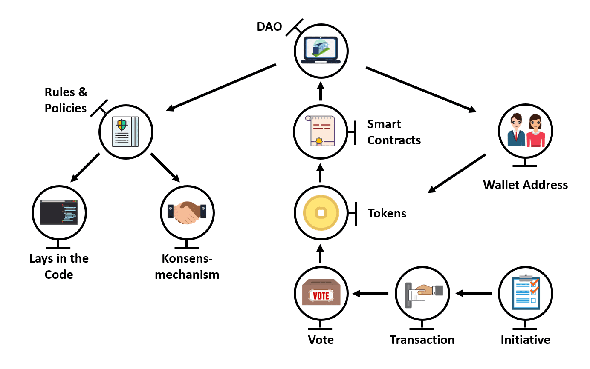

“If you want to go fast, go alone. If you want to go far, go together.”
– African proverb.
Decentralization doesn’t just have smart contracts. DAO are about people, and thus soft skills are essential. Jono Bacon has written the best book on community management called “The Art of Community”. It is HIGHLY recommended to read. A great way to get the soft skills to manage a DAO is to join a meetup and perhaps co-organize an event. You can find Ethereum meetups with like-minded individuals around the world via the ConsenSys BUDIL Network. In addition, you can become a valued member of a community by joining the ConsenSys Discord.
Another way is by joining a project like AirSwap! AirSwap is dedicated to creating tools for frictionless trade. They have an excellent governance system and need devs like you! Join their Discord and check out their roadmap. If NFTs are your thing, check out Megaliths. Or check out the DAOs on DAOHaus.
DAOs also need clear lines of communication, transparency of information, and an inclusive governance structure. This means a transparent voting process and consensus making mechanism.
Along with a mission statement, a Code of Conduct is a must. A great one that can be built off is the Berlin Code of Conduct which is open source, modifiable and extensible. A code of conduct is a MUST.
As groups start to scale, there will inevitably be issues with certain members. Remarkably, most people are chill, and you can set the tone very easily by having clear expectations written in a code of conduct. The clearer your rules are, the easier it is to collaborate.
Decentralization means clear governance structures. Luckily we have some prior history with specific DeFi projects from which we can learn. For example, yearn Finance, Synthetix, Compound Finance and MakerDAO have great governance models worth studying.

The improvement process is the method by which projects like Ethereum, protocols and DAO manage change.
There are typically three types of proposals. Improvement proposals involve adding, removing, or improving some code, to the project or adjusting to governance. This could be adding a new feature for members or users. Configuration proposals involve adjusting variables in smart contracts, say the collateralization ratio. Finally, meta proposals involve proposals around the improvement process itself.
The general process for creating a proposal is:
Discussions start informally via chat platforms, online forums and meetings. Eventually, the ideas begin to coalesce into something tangible. The next move could be a temperature check, where a quick poll can gauge support said idea. During this process, the ideas are refined as they are still in a nascent stage.
It is interesting to note that Discord and chat platforms, in general, are great for creating community building, brainstorming and getting immediate feedback. However, due to a chat platform's UX/UI, they are NOT a great place to host binding votes or establish long-form conversations.
Discourse allows for long-form threads, which allow for more well thought out conversations. However, this comes at the cost of a lack of immediacy in response. Discourse can also be configured to be found on search engines, which help with attracting potential members.
Some Discourse forums are more technically focused on catering to their audiences, like Ethresear.ch or research.synthetix.io. Others are more informal. Tailor it to suit your needs. Side note, you can customize your Discourse template to make it more UX/UI friendly and organized. That effort will go a long way.
Once the idea has been discussed, a draft is created. There are various tags for proposals. The general gist of these are:
Draft - still in draft stage
Review - finalized and open for further community input. It can go back to the draft stage.
Submitted - staged to go through the proposal process. The voting period is set.
Pending Vote - in vote stage
Accepted - went through with a number of votes needed
Rejected - rejected. Back to the drawing boards or abandoned
Completed - Team has implemented the proposal
There can be other tags like On Roadmap. Again, you can customize these as your community sees fit.
Usually, voting occurs with a governance token. This corresponds to 1 token = 1 vote. Although this may seem unfair, it is the only method known to prevent Sybil attacks. Perhaps once the industry figures out how to use decentralized identities, we can see more typical voting forms.
The leading DeFi Protocols use Snapshot as their tool of choice to avoid gas fees. However, as Layer 2 solutions begin to roll out in 2021 and onward, we shall see more on-chain voting as a result. For example, Aragon is already looking to roll out Optimism.
There are several issues with voting. One is low turnout and engagement. This plagues many protocols and DAOs as users wish to get the financial upside without commensurate voting. As a result, some protocols are turning to using vote boosting and locking mechanisms like veCRV from Curve and oSUSHI.
The reason is twofold. First, it helps reduce the dumping pressure from tokens by restricting supply and locking tokens up. Second, it gives an earning and/or voting boost to long term stakers who are more engaged. This works well with inflationary tokens as it subtly transfers value from passive and inactive participants to more active members.
Another technique to deal with voter apathy is vote delegation. Some protocols allow token holders to delegate their votes to a representative. One version of this is liquid democracy. Adressen Horowitz, which has several billion-dollar funds to invest in crypto, has a great post on designing token delegation systems.
Another is the frequency of votes. Too many votes in a period could wear out existing engaged users. Too frequent will make them passive. Having a consistent cadence of votes allows for predictability and the creation of habits.
Another issue can be around voting in general. What is fairness in voting? How can one allocate resources optimally? Voting can go beyond just one entity, one vote. What about minority votes? Here is where we get into game theory, systems design and political theory, which are outside the scope of this write-up. However, there are some rabbit holes to go into and explore. Web3 has something for everyone 😁.
Vitalik Buterin wrote a great piece on quadratic voting, coin voting governance, and blockchain voting. A great twitter follow related to governance and funding of public goods are the awesome folks at Gitcoin, especially Kevin Owocki. Check out his website.
Once an improvement proposal is passed, it's placed on the roadmap. Having a clear roadmap helps with communication and expectations. A community builds social capital with itself if it's able to make a promise, aka pass a proposal, and deliver on it. Roadmaps don't have to have exact time dates, but having a clear hierarchy of what is important and a rough time estimate is essential.
Implementation can be done by the core team/organizers or by community members. Typically the more decentralized the work, the more coordination is needed. However, if done right, things can move fast. Aiming for good communication with clear roles and responsibilities between teams helps to reduce burnout and increases engagement.
Be warned that community organizing can be time-intensive and involve work. However, having clear incentives, good treasury management skills, and memes can help members step up to the plate and help while fostering community.
Treasury management is part of community management. How we manage the treasury affects the sustainability of the DAO. A practical example can be in the diversification of funds. If a DAO holds a large percentage of their own tokens, it creates risk. The value of the token could drop, affecting the ability to fund operations. It could also affect the incentive structure to keep members. Because of this, projects like SushiSwap have tried to diversify their assets into stablecoins. Another method is to take a cut of economic activity happening in the network to fund operations like SushiSwap's Kanpai.
Another practical method of treasury management is the inflation rate of the token. Inflation rates via yield farming can be a great tool to get new members. For utility tokens, they help move capital from passive holders to active contributors who create value. However, if used incorrectly, inflation rewards can spin out of control and follow a predictable ponzinomics of inflation and collapse.
At the end of the day, no amount of clever financial engineering can substitute for authentic community engagement and the value they provide.
There is so much more that can be covered; however, the best way to learn is to join a DAO and start your own! Have fun and experiment!
There is still more to learn about raising funds and such. However, let's call it a day and revisit this in Part 2 sometime.
DAO Virtual Summit DAO research papers Fair Launch Summit DAOTalk.org
🎉 🥳 You made it this far! You get an Easter Egg 🥚.
Bonus! After the bootcamp check out some cool videos around a16z’s Crypto School and check out ConsenSys Tachyon, our blockchain accelerator.